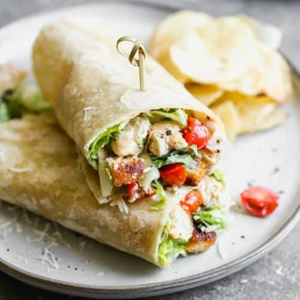

Chicken Caesar Wrap

Ingredients
- 2 cups cooked chicken, chopped
- 3 cups Romaine lettuces, chopped
- 2/3 cup cherry tomatoes, halved
- 1/4 cup freshly grated parmesan cheese
- 1/2 cup croutons
- 1/2 caesar salad dressing
- freshly ground black pepper, to taste
- 5 large flour tortillas (or whole wheat tortillas
Steps
- Toss all ingredients, except for tortillas, together in a large mixing bowl.
- Place a large spoonful of mixture in a line along the edge of a tortilla.
- Roll up tightly, like a burrito, and secure with toothpicks, if necessary.